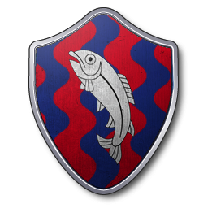

Maison Tully
Après la maison Targaryen et la symbolique du feu, la maison Tully est quant elle, tournée vers les rituels maritimes. On pense notamment au rite funéraire consistant à embarquer le défunt dans une embarcation et à mettre le feu à cette dernière à l’aide d’une flèche, lorsque le convoi se trouve dans le creux de la rivière de la Culbute. La maison Tully, compte tenu de l’attirance pour la symbolique maritime, a sa demeure à proximité d’affluents. Ainsi, la Culbute et la Ruffurque forme un triangle naturel dans lequel vient se nicher la demeure de Vivesaigues qui est la résidence principale de la maison Tully. La structure de Vivesaigues est très particulière dans le sens où la situation géographique oblige les assiégeants potentiels à se diviser autour de la forteresse. Cette division crée une faiblesse chez l’ennemi dans le cas où celui-ci serait attaqué par l’extérieur car il n’y pas de pont permettant à un groupe d’assiégeants de soutenir un autre groupe, situé sur une autre face du domaine.